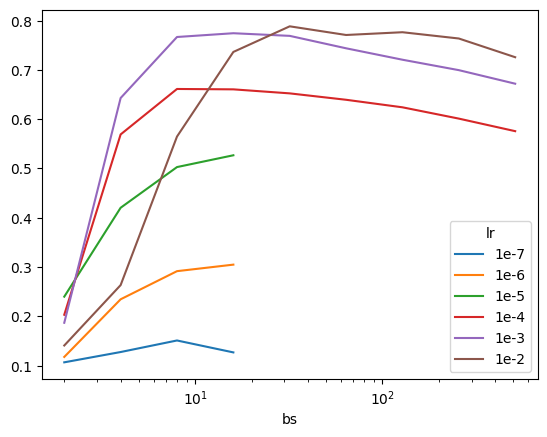

---
title: An Analysis of Batch Size vs. Learning Rate on Imagenette
date: "2025-06-18"
author: Vishal Bakshi
description: I continue my Imagenette experiments to gain some intuition on how batch size, learning rate and accuracy interact. I find that for all three models too low or too high of a batch size plummets performance, while batch sizes in the 8-32 range maximize accuracy for a range of learning rates.
filters:
- lightbox
lightbox: auto
categories:
- python
- fastai
- deep learning
- TinyScaleLab
- imagenette
---Background
from fastai.vision.all import *
from fastai.callback.wandb import WandbCallback
import wandb
import pandas as pd
import matplotlib.pyplot as pltIn my previous blog post and video I worked through my initial imagenette experiments.
Imagenette is a subset of 10 easily classified classes from Imagenet (tench, English springer, cassette player, chain saw, church, French horn, garbage truck, gas pump, golf ball, parachute).
With a batch size of 64 and three different LRs (1e-4, 1e-3, 1e-2) I achieved the following results using three models (xresnet34, xse_resnext50, xresnet18):
| Model/Learning Rate | Accuracy |
|---|---|
| xresnet34/1e-2 | 0.7929 |
| xse_resnext50/1e-2 | 0.7926 |
| xresnet18/1e-2 | 0.7870 |
| xresnet34/1e-3 | 0.7776 |
| xresnet18/1e-3 | 0.7743 |
| xse_resnext50/1e-3 | 0.7526 |
| xresnet18/1e-1 | 0.7373 |
| xse_resnext50/1e-4 | 0.6532 |
| xresnet34/1e-4 | 0.6446 |
| xresnet18/1e-4 | 0.6171 |
There was a hierarchy of LRs: 1e-2 performed best, followed by 1e-3 and 1e-4.
In this notebook I’m going to expand my training runs to more batch sizes: [1, 2, 4, 8, 16, 32, 64, 128, 256, 512, 1024, 2048]. In each case, I’ll use lr_find to determine three stable learning rates.
Results
import pandas as pd
import matplotlib.pyplot as plt
df = pd.read_csv("/content/2025-06-04-imagenette-runs.csv")
df["model"] = df["run"].apply(lambda x: x.split("-")[1])
df["bs"] = df["run"].apply(lambda x: x.split("-")[3]).astype(int)
def _lr(x):
_map = {"05": "1e-5", "06": "1e-6", "07": "1e-7", "0.0001": "1e-4", "0.001": "1e-3", "0.01": "1e-2", "0.1": "1e-1"}
return _map[x.split("-")[-1]]
df["lr"] = df["run"].apply(lambda x: _lr(x))
df["lr"] = pd.Categorical(df["lr"], categories=["1e-7", "1e-6", "1e-5", "1e-4", "1e-3", "1e-2", "1e-1"])In total there were 123 training runs.
df.shape(123, 5)The best training run goes to xresnet34 with a batch size of 16 and a learning rate of 1e-3.
df[df['acc'] == df['acc'].max()]| run | acc | model | bs | lr | |
|---|---|---|---|---|---|
| 9 | imagenette-xresnet34-bs-16-lr-0.001 | 0.800764 | xresnet34 | 16 | 1e-3 |
The top 10 training runs were for a LR of 1e-3 or 1e-2.
df.sort_values("acc", ascending=False).head(10)| run | acc | model | bs | lr | |
|---|---|---|---|---|---|
| 9 | imagenette-xresnet34-bs-16-lr-0.001 | 0.800764 | xresnet34 | 16 | 1e-3 |
| 66 | imagenette-xresnet18-bs-32-lr-0.01 | 0.799745 | xresnet18 | 32 | 1e-2 |
| 75 | imagenette-xresnet18-bs-64-lr-0.01 | 0.797452 | xresnet18 | 64 | 1e-2 |
| 7 | imagenette-xresnet18-bs-16-lr-0.01 | 0.796433 | xresnet18 | 16 | 1e-2 |
| 16 | imagenette-xresnet18-bs-8-lr-0.001 | 0.795414 | xresnet18 | 8 | 1e-3 |
| 25 | imagenette-xresnet34-bs-8-lr-0.001 | 0.795414 | xresnet34 | 8 | 1e-3 |
| 6 | imagenette-xresnet34-bs-16-lr-0.01 | 0.795159 | xresnet34 | 16 | 1e-2 |
| 84 | imagenette-xresnet18-bs-128-lr-0.01 | 0.791338 | xresnet18 | 128 | 1e-2 |
| 76 | imagenette-xresnet34-bs-64-lr-0.01 | 0.790573 | xresnet34 | 64 | 1e-2 |
| 67 | imagenette-xresnet34-bs-32-lr-0.01 | 0.789554 | xresnet34 | 32 | 1e-2 |
All three models achieved a max accuracy within 1.2% of each other.
df.groupby(["model"])["acc"].max().sort_values(ascending=False)| acc | |
|---|---|
| model | |
| xresnet34 | 0.800764 |
| xresnet18 | 0.799745 |
| xse_resnext50 | 0.788280 |
A batch size of 16 yielded the highest accuracy, with 8, 32, 64 and 128 within 1%. Accuracy drops significantly for a batch size of 1, 1024 and 2048 showing that too large or too small a batch size is detrimental to training.
df.groupby(["bs"])["acc"].max().sort_values(ascending=False)| acc | |
|---|---|
| bs | |
| 16 | 0.800764 |
| 32 | 0.799745 |
| 64 | 0.797452 |
| 8 | 0.795414 |
| 128 | 0.791338 |
| 4 | 0.784968 |
| 256 | 0.764841 |
| 512 | 0.731975 |
| 2 | 0.719745 |
| 1024 | 0.662166 |
| 2048 | 0.485350 |
| 1 | 0.452229 |
As we saw earlier, the highest accuracy was achieved with a learning rate of 1e-3, with 1e-2 right on its tail.
df.groupby(["lr"], observed=True)["acc"].max().sort_values(ascending=False)| acc | |
|---|---|
| lr | |
| 1e-3 | 0.800764 |
| 1e-2 | 0.799745 |
| 1e-4 | 0.715414 |
| 1e-5 | 0.526624 |
| 1e-6 | 0.304713 |
| 1e-7 | 0.150828 |
Finally, I’ll look at the maximum accuracy achieved for each model/learning rate/batch size combination.
For xresnet18, some interesting patterns:
- For each learning rate, the maximum accuracy increases up to a point, then decreases, illustrating how batch sizes too small or too large lead to worse performance
- 1e-4: acc increases up to bs=8 then decreases
- 1e-3: acc increases up to bs=8 then decreases
- 1e-2: acc increases up to bs=32 then decreases
_df = df.query("model == 'xresnet18'")
pd.crosstab(df["lr"], _df["bs"], values=_df["acc"], aggfunc="max").sort_index(ascending=True)| bs | 1 | 2 | 4 | 8 | 16 | 32 | 64 | 128 | 256 | 512 | 1024 | 2048 |
|---|---|---|---|---|---|---|---|---|---|---|---|---|
| lr | ||||||||||||
| 1e-4 | 0.388535 | 0.608153 | 0.693503 | 0.704968 | 0.698089 | 0.665478 | 0.624713 | 0.512102 | 0.400000 | 0.310318 | 0.146497 | 0.000255 |
| 1e-3 | 0.452229 | 0.709809 | 0.778344 | 0.795414 | 0.789299 | 0.784968 | 0.769427 | 0.744713 | 0.719236 | 0.647389 | 0.544459 | 0.336306 |
| 1e-2 | 0.285605 | 0.649682 | 0.738089 | 0.778089 | 0.796433 | 0.799745 | 0.797452 | 0.791338 | 0.747006 | 0.731975 | 0.661147 | 0.485350 |
xresnet18
pd.crosstab(df["lr"], _df["bs"], values=_df["acc"], aggfunc="max").sort_index(ascending=True).T.plot(logx=True);We see a similar pattern for xresnet34:
| lr | Inflection point (bs) |
|---|---|
| 1e-7 | – |
| 1e-6 | – |
| 1e-5 | 4 |
| 1e-4 | 16 |
| 1e-3 | 16 |
| 1e-2 | 16 |
_df = df.query("model == 'xresnet34'")
pd.crosstab(df["lr"], _df["bs"], values=_df["acc"], aggfunc="max").sort_index(ascending=True)| bs | 1 | 2 | 4 | 8 | 16 | 32 | 64 | 128 | 256 | 512 | 1024 | 2048 |
|---|---|---|---|---|---|---|---|---|---|---|---|---|
| lr | ||||||||||||
| 1e-7 | NaN | 0.109554 | 0.109045 | 0.087389 | 0.100892 | NaN | NaN | NaN | NaN | NaN | NaN | NaN |
| 1e-6 | NaN | 0.243822 | 0.180127 | 0.201274 | 0.159236 | NaN | NaN | NaN | NaN | NaN | NaN | NaN |
| 1e-5 | NaN | 0.385478 | 0.456051 | 0.446879 | 0.428535 | NaN | NaN | NaN | NaN | NaN | NaN | NaN |
| 1e-4 | 0.388535 | 0.597962 | 0.704459 | 0.709809 | 0.715414 | 0.680764 | 0.641529 | 0.560510 | 0.489172 | 0.393376 | 0.269299 | 0.212229 |
| 1e-3 | 0.403567 | 0.719745 | 0.784968 | 0.795414 | 0.800764 | 0.787261 | 0.765860 | 0.751592 | 0.728408 | 0.667771 | 0.580127 | 0.430828 |
| 1e-2 | 0.246624 | 0.638217 | 0.721019 | 0.776306 | 0.795159 | 0.789554 | 0.790573 | 0.787006 | 0.764841 | 0.723312 | 0.662166 | 0.385732 |
xresnet34
pd.crosstab(df["lr"], _df["bs"], values=_df["acc"], aggfunc="max").sort_index(ascending=True).T.plot(logx=True);And a similar pattern for xse_resnext50 as well:
| lr | Inflection point (bs) |
|---|---|
| 1e-7 | 8 |
| 1e-6 | – |
| 1e-5 | – |
| 1e-4 | 8 |
| 1e-3 | 16 |
| 1e-2 | 32 |
_df = df.query("model == 'xse_resnext50'")
pd.crosstab(df["lr"], _df["bs"], values=_df["acc"], aggfunc="max").sort_index(ascending=True)| bs | 2 | 4 | 8 | 16 | 32 | 64 | 128 | 256 | 512 |
|---|---|---|---|---|---|---|---|---|---|
| lr | |||||||||
| 1e-7 | 0.106497 | 0.127389 | 0.150828 | 0.126624 | NaN | NaN | NaN | NaN | NaN |
| 1e-6 | 0.117452 | 0.234395 | 0.291465 | 0.304713 | NaN | NaN | NaN | NaN | NaN |
| 1e-5 | 0.239745 | 0.420127 | 0.502675 | 0.526624 | NaN | NaN | NaN | NaN | NaN |
| 1e-4 | 0.203057 | 0.568917 | 0.661147 | 0.660382 | 0.652229 | 0.639236 | 0.623949 | 0.601019 | 0.575541 |
| 1e-3 | 0.186752 | 0.642803 | 0.766624 | 0.774267 | 0.768917 | 0.743694 | 0.720510 | 0.699363 | 0.671847 |
| 1e-2 | 0.140637 | 0.263185 | 0.564586 | 0.736306 | 0.788280 | 0.770701 | 0.776306 | 0.763567 | 0.725605 |
xse_xresnet50
Looking at the accuracy curves for xse_resnext50 we see that it’s more robust to larger batch sizes (the accuracy tapers off slower than xresnet34 and xresnet18 as batch size increases past the inflection point).
pd.crosstab(df["lr"], _df["bs"], values=_df["acc"], aggfunc="max").sort_index(ascending=True).T.plot(logx=True);
Next Steps
I posted my initial musing (after I had analyzed results for batch sizes 32 to 2048) that lowering the batch size might continue to yield higher accuracy. Jeremy validated this approach:
That’s a great question! Stable low bs training isn’t easy, but it’s a good plan :)
— Jeremy Howard (@jeremyphoward) June 5, 2025
I recently started using Gemini Pro 2.5 (preview), and hadn’t yet tried out its Deep Research tool. I thought this would be an excellent opportunity to do so. I prompted Gemini with the following:
I recently have been training xresnet18, xresnet34 and xse_resnext50 on the Imagenette dataset by fast.ai (which is a 10k subset of ImageNet with 10 easily classified classes). I have trained on batch sizes from 1 to 2048. Generally speaking, the highest accuracy achieved increases from a batch size of 1 to a batch size of 8, 16 or 32 (depending on the model/learning rate) and then decreases as batch size increases to 2048. This makes me want to explore small batch size training for this project. Jeremy Howard tweeted that “Stable low bs training isn’t easy, but it’s a good plan”. I want you to help me answer two questions in this chat:
Why is stable low batch size training difficult?
What techniques are there (either in literature/arxiv, blog posts or forums) to make low batch size training stable? I’m most interested in improving the accuracy of low batch size trainings.
I also prompted Allen AI’s Paper Finder with:
strategies to make low batch size training more stable and improve accuracy for image recognition
I have shared the Gemini Deep Research and Ai2 Paper Finder findings in another blog post.
Imagenette will unlock an entire new lane of research and experimentation for me, helping me towards my TinyScaleLab project goal of training and analyzing high performant tiny language models.
Lastly, I’m growing my YouTube channel so if you haven’t already, please check it out and subscribe!
Appendix: Training Code
Since I’m going to run a significantly larger number of trainings than my initial notebook, I’ll wrap my code into functions/dictionaries for a tighter loop, similar to what Jeremy did in his Scaling Up: Road to the Top, Part 3 notebook.
I ran lr_find for each model/batch size combination and checked that for all combinations, the loss curve was stable for the selected learning rates.
path = untar_data(URLs.IMAGENETTE_160)
100.01% [99008512/99003388 00:02<00:00]
lbl_dict = dict(
n01440764='tench',
n02102040='English springer',
n02979186='cassette player',
n03000684='chain saw',
n03028079='church',
n03394916='French horn',
n03417042='garbage truck',
n03425413='gas pump',
n03445777='golf ball',
n03888257='parachute'
)imagenette = DataBlock(blocks = (ImageBlock, CategoryBlock),
get_items = get_image_files,
get_y = Pipeline([parent_label, lbl_dict.__getitem__]),
splitter = GrandparentSplitter(valid_name='val'),
item_tfms = RandomResizedCrop(128, min_scale=0.35),
batch_tfms = Normalize.from_stats(*imagenet_stats))def _dls(bs): return imagenette.dataloaders(path, bs=bs)_dls(64).bs, _dls(128).bs, _dls(256).bs(64, 128, 256)_dls(64).show_batch()models = ['xresnet34', 'xse_resnext50', 'xresnet18']#batch_sizes = (32, 64, 128, 256, 512, 1024, 2048)
batch_sizes = (2, 4, 8, 16)
lrs = (1e-4, 1e-3, 1e-2)wandb.login()for bs in batch_sizes:
dls = _dls(bs)
assert dls.bs == bs
for model in models:
if model == 'xse_resnext50' and bs < 2: continue # avoid Expected more than 1 value per channel when training, got input size torch.Size([1, 4096])
for lr in lrs:
wandb.init(
project="tinyscale-lab",
name=f"imagenette-{model}-bs-{bs}-lr-{lr}",
tags=[f"bs={bs}", f"model={model}", f"lr={lr}"]
)
if model == 'xse_resnext50': learn = vision_learner(dls, xse_resnext50, metrics=accuracy, pretrained=False, cbs=WandbCallback())
if model == 'xresnet18': learn = Learner(dls, xresnet18(), metrics=accuracy, cbs=WandbCallback())
if model == 'xresnet34': learn = Learner(dls, xresnet34(n_out=10), metrics=accuracy, cbs=WandbCallback())
with learn.no_logging() and learn.no_mbar(): learn.fit_one_cycle(5, lr)
wandb.finish()Using lr_find, I found that xresnet18 was stable for 1e-4, 1e-3 and 1e-2 LRs but the other two were not. Instead, they were stable for LRs of 1e-7, 1e-6 and 1e-5. So I ran training runs for those two models and LRs for batch sizes of 2, 4, 8 and 16.
for bs in batch_sizes:
dls = _dls(bs)
assert dls.bs == bs
for model in ['xresnet34', 'xse_resnext50']:
if model == 'xse_resnext50' and bs < 2: continue # avoid Expected more than 1 value per channel when training, got input size torch.Size([1, 4096])
for lr in [1e-7, 1e-6, 1e-5]:
wandb.init(
project="tinyscale-lab",
name=f"imagenette-{model}-bs-{bs}-lr-{lr}",
tags=[f"bs={bs}", f"model={model}", f"lr={lr}"]
)
if model == 'xse_resnext50': learn = vision_learner(dls, xse_resnext50, metrics=accuracy, pretrained=False, cbs=WandbCallback())
if model == 'xresnet18': learn = Learner(dls, xresnet18(), metrics=accuracy, cbs=WandbCallback())
if model == 'xresnet34': learn = Learner(dls, xresnet34(n_out=10), metrics=accuracy, cbs=WandbCallback())
with learn.no_logging() and learn.no_mbar(): learn.fit_one_cycle(5, lr)
wandb.finish()